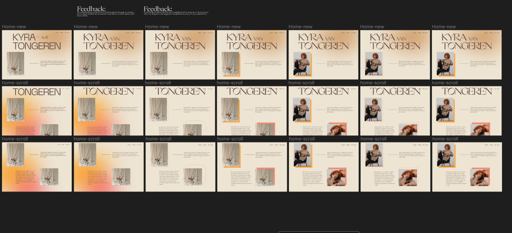
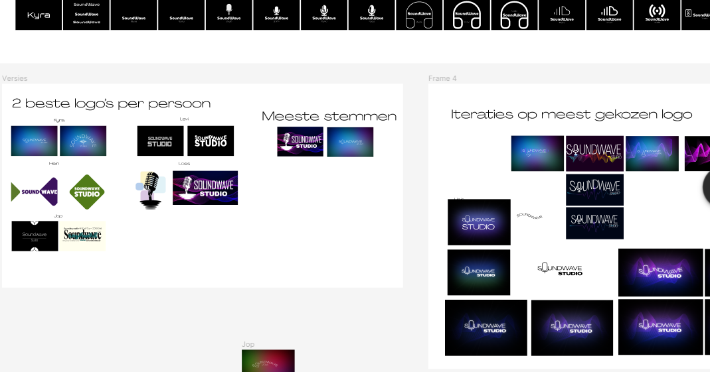

For itterative design I made a lot of itterations in the projects and my portfolio. When I asked for feedback I made sure to incorporate it in my next itteration. As you can see I added my feedback to the next itterartion. This way I can look back on what I made and the feedback I got from it.
 